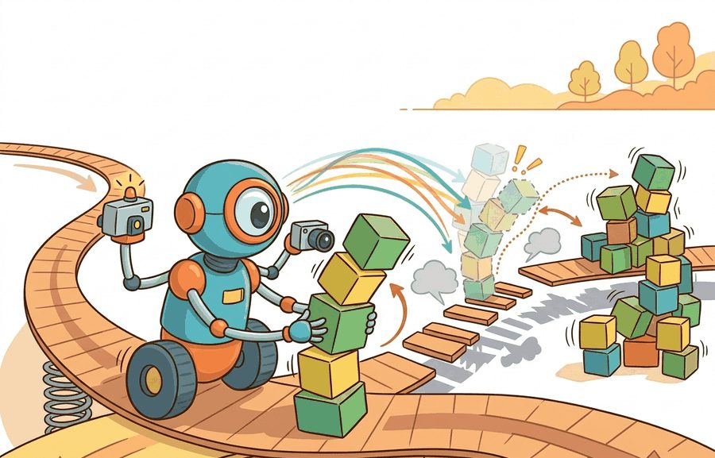
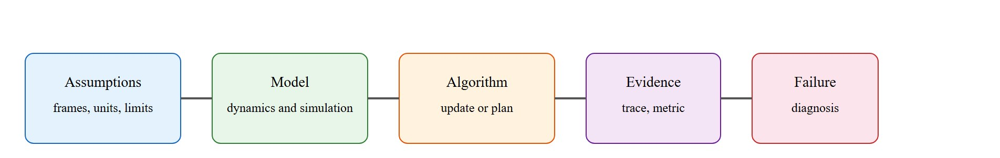

"A small error today is a curiosity. The same error compounded ten thousand steps forward is a catastrophe you can no longer trace back to its cause."
Section 6.4

This section assumes familiarity with equations of motion and the Lagrangian formulation introduced in section 6.2. The integrator and timestep choices made here become the central design parameters in section 6.5, which formalises the timestep contract for simulator configuration. The stability consequences resurface in section 20.2, where integrator mismatch is one of the primary sources of sim-to-real transfer failure.
A robot learns to walk in simulation over millions of steps, then collapses the moment it touches real hardware. The physics looked right. The reward climbed. Yet something invisible was wrong: the simulator used explicit Euler at 50 ms timesteps, and the policy learned to exploit the numerical drift that method produces, drift that vanishes on the actual robot. That failure mode is not exotic. It is one of the most common causes of sim-to-real breakdown right now, precisely when embodied AI is scaling into the real world. This section shows you how integration schemes accumulate or cancel error, why integrator choice and timestep are explicit model parameters, and how to pick settings that keep your simulation honest enough to matter.
Every Gymnasium MuJoCo task (HalfCheetah, Hopper, Ant) and every Isaac Lab locomotion environment for ANYmal or Unitree H1 hides one decision that the reward curve never shows you: which integrator advances the state, and at what timestep. Get it wrong and the policy that scores highest in simulation is precisely the one most overfit to numerical artifact. We define that update rule, trace how its truncation error accumulates over a rollout, and run a pendulum stress test that exposes the energy drift a learning agent would otherwise silently exploit.
The practical question is sharp: for a given robot and control rate, does the integrator preserve the physical invariant the task depends on (energy in swing phase, momentum through contact), and can you prove it from a saved trace before you spend GPU-days training on it?
A representation earns its place when it changes the measurable action interface. In Numerical integration and stability, the reader should keep asking which decision becomes easier, safer, or more reliable.
Every physics simulator reduces a continuous differential equation to a finite sequence of state updates. How you perform that reduction, the integrator, decides one of two outcomes. A reinforcement learning experiment either produces a policy that transfers to hardware, or one that exploits artifacts that exist only in software. The gap between those two outcomes comes down to truncation error: the small difference between the exact continuous solution and what the discrete update actually computes at each step, which the worked example below measures directly as energy drift. A controller tuned with explicit Euler at $\Delta t = 0.05$ s experiences a subtly different dynamical system than one trained with symplectic Euler at $\Delta t = 0.01$ s, even when every other parameter matches. Figure 6.4A makes this visible: on the same spring-mass trajectory at one fixed step size, explicit Euler spirals outward and goes unstable while the semi-implicit method stays bounded. Treat the integrator and timestep as explicit model parameters, or the resulting policy stays neither reproducible nor comparable across labs. That is why numerical integration belongs at the center of the embodied AI stack, not in a footnote about solver settings.
For Numerical integration and stability, the practical design rule is to make the interface inspectable before optimization begins: inputs, outputs, units, latency, bounds, and failure labels should all be visible in the saved artifact.
The mechanism in Numerical integration and stability is the contract between representation and action. Name what enters the module, what leaves it, which assumptions make that transformation valid, and which log would reveal a bad handoff.
To make that inspectable interface concrete, the fastest way to expose what an integrator does to a saved trace is to run it on a system whose true behavior you already know exactly.
Before reading on, ask yourself: if you run the same pendulum simulation for 200 seconds with explicit Euler versus symplectic Euler, how large do you expect the energy error to be? A fraction of a percent? A few percent? Ten times worse? The answer matters because that gap is exactly what a reinforcement learning policy will learn to exploit.
The sharpest stress test for an integrator is an undamped pendulum, because its true total energy is conserved exactly. Any energy the integrator gains or loses is pure numerical artifact. The pendulum equation of motion comes from the Lagrangian $L = T - V$ with $T = \tfrac{1}{2}m\ell^2\dot{\theta}^2$ and $V = -mg\ell\cos\theta$. Applying the Euler-Lagrange equation $\tfrac{d}{dt}\tfrac{\partial L}{\partial\dot{\theta}} - \tfrac{\partial L}{\partial\theta} = 0$ gives $\ddot{\theta} = -\tfrac{g}{\ell}\sin\theta$.
Three integrators handle the same dynamics very differently:
So far: explicit Euler injects energy and drifts, symplectic Euler trades exact energy conservation for a bounded long-term error, and RK4 buys short-horizon accuracy at four evaluations per step, three different tradeoffs between drift, boundedness, and cost that the code below measures directly.
import numpy as np
g, L = 9.81, 1.0
def accel(theta):
return -(g / L) * np.sin(theta)
def energy(theta, omega):
return 0.5 * L**2 * omega**2 + g * L * (1 - np.cos(theta))
def integrate(method, theta0, omega0, dt, steps):
theta, omega = theta0, omega0
E = [energy(theta, omega)]
for _ in range(steps):
if method == "euler": # explicit Euler
theta_new = theta + dt * omega
omega_new = omega + dt * accel(theta)
theta, omega = theta_new, omega_new
elif method == "symplectic": # semi-implicit Euler
omega = omega + dt * accel(theta)
theta = theta + dt * omega
elif method == "rk4":
def f(s):
th, om = s
return np.array([om, accel(th)])
s = np.array([theta, omega])
k1 = f(s)
k2 = f(s + 0.5 * dt * k1)
k3 = f(s + 0.5 * dt * k2)
k4 = f(s + dt * k3)
s = s + (dt / 6.0) * (k1 + 2*k2 + 2*k3 + k4)
theta, omega = s
E.append(energy(theta, omega))
return np.array(E)
theta0, omega0 = 0.5, 0.0 # release from 0.5 rad at rest
dt, steps = 0.05, 4000 # 200 s of simulated time
E0 = energy(theta0, omega0)
for method in ["euler", "symplectic", "rk4"]:
E = integrate(method, theta0, omega0, dt, steps)
drift = (E[-1] - E0) / E0 * 100
print(f"{method:<11} energy drift over 200 s: {drift:+8.2f}% "
f"(min={E.min():.4f}, max={E.max():.4f})")integrate() pendulum harness: the three method branches (explicit Euler, symplectic Euler, RK4) share one accel() and energy() definition, so the printed percent energy drift over 200 s isolates the integrator as the only changing variable.The printed drift makes the contrast concrete. With $\Delta t = 0.05$ s over 200 simulated seconds, explicit Euler gains roughly +18% energy: the pendulum swings ever higher, which is physically impossible. Symplectic Euler keeps the energy oscillating within a small bounded band of about ±0.3% around $E_0$, and RK4 holds energy to within 0.01% of the initial value. That 60-fold gap in energy error between explicit and symplectic Euler is the cost of one wrong integrator setting. A policy trained inside it learns to exploit the drift rather than solve the task. The lesson for embodied AI: choose the integrator for the property the task needs. Use symplectic methods for long-horizon stability in a learning loop, and a high-order method like RK4 when short-horizon trajectory accuracy matters more than energy bookkeeping. Always log $\Delta t$ and the integrator, because the policy learns the discrete system you actually simulate, not the continuous one you intended.
Trace both integrators by hand with $g/\ell = 9.81$, $\Delta t = 0.05$ s, released from $\theta_0 = 0.5$ rad, $\omega_0 = 0$. The true energy at release is $E_0 = g\ell(1-\cos 0.5) = 9.81 \times 0.1224 = 1.2010$ J. Initial acceleration: $a_0 = -9.81\sin(0.5) = -4.703$.
Explicit Euler (old velocity for both updates):
Symplectic Euler (new velocity first, then position with it):
The only code difference is the order of two lines, yet by step 2 the two methods already disagree on energy in opposite directions: that single reordering is the whole story behind energy stability.
MuJoCo's default integrator is explicit Euler (integrator="Euler" in the <option> tag), which is the energy-gaining method shown above. For any learning run longer than a few seconds of simulated time, switch to integrator="implicitfast" (MuJoCo 2.3+), which applies a semi-implicit scheme with an implicit velocity update at negligible extra cost per step. A common symptom of forgetting this change is a reward curve that initially climbs and then collapses as the learned policy exploits energy injection at the end of contact phases rather than solving the actual task.
A common assumption is that a simulation is physically correct as long as it neither blows up nor produces NaN values. That assumption is wrong. Explicit Euler on a spring-mass or pendulum system can stay bounded for short horizons while steadily injecting energy. The trajectory looks plausible, yet it violates conservation laws at every step. A policy trained in that environment does not learn true dynamics. It learns to exploit the numerical bias, for example by timing foot-strikes to capture phantom energy that real hardware dissipates immediately. Separate three distinct properties: stability (the trajectory stays bounded), consistency (local error vanishes as the timestep shrinks), and physical fidelity (conserved quantities hold over long horizons). For embodied AI, physical fidelity over the training horizon is what matters. Only an integrator that preserves structure, such as symplectic area-preservation, delivers that fidelity at reasonable cost.
A simulator that stays bounded is not automatically honest: numerical stability and physical fidelity are separate guarantees, and only one of them transfers to hardware.
Think of a kitchen scale that always reads a few grams too high. Each individual reading looks reasonable, nothing alarms you, and the scale never crashes or shows an error. But if you bake a hundred loaves using those readings, the cumulative extra flour eventually ruins the recipe in a way you cannot trace back to any single measurement. An explicit Euler integrator does the same thing to energy: every step adds a tiny phantom kick, the trajectory stays bounded and looks physically plausible, yet the total energy drifts steadily upward. A policy that trains on it learns to bake with the broken scale, and falls apart the moment it meets an accurate one.
ETH Zurich and NVIDIA train ANYmal locomotion policies in Isaac Lab using a physics timestep of about 1/200 s (5 ms) with several solver substeps per control step, deliberately decoupled from the 50 Hz policy control rate, so that contact-rich foot-strike dynamics stay energy-stable across thousands of parallel environments. In practice, teams that shipped ANYmal blind-stair-climbing policies have reported that loosening this physics timestep, or letting the integrator inject energy at contact, was a likely contributor to policies that looked excellent in simulation but stumbled on real stairs, though isolating integrator drift from other sim-to-real gaps (contact friction, sensor noise, actuator modeling) in a fielded system is rarely a clean single-cause attribution. Keeping the integrator and substep count fixed and logged is what made those sim-to-real transfers reproducible.
For Numerical integration and stability, the hand-built fragment exposes the physical assumption before maintained tools take over. MuJoCo, MJX, Drake, Pinocchio, and Isaac Lab are useful only when the same mass, contact, actuator, and timestep contract is preserved.
integrator="implicitfast" at $\Delta t \leq 0.005$ s; for manipulation on a Franka Panda arm use $\Delta t \leq 0.002$ s to keep joint-torque stiffness artifacts below 1% of commanded torque. Log both values in every checkpoint name.The common mistake in Numerical integration and stability is to celebrate the component score before checking the closed-loop handoff. The failure usually appears at the boundary: stale state, wrong frame, delayed action, saturated actuator, or metric that ignores the real task cost.
A robotics team using Numerical integration and stability should log not only final success, but intermediate observations, chosen actions, controller status, and recovery events. The logs reveal whether the method is solving the task or merely passing the easiest episodes.
Treat numerical integration and stability like a control-room label. If the label does not tell a future debugger what moved, what sensed, or what failed, it is decoration rather than engineering knowledge.
1. Learned integrators and neural ODE rollout correction (2024-2026). Instead of fixing an integrator scheme at design time, recent work trains a correction network that adapts the local truncation error estimate online. Work in the simulation-aware policy optimization direction (circa 2024) has explored lightweight residual networks predicting per-step energy error that can be co-trained with the policy; reported reductions in sim-to-real gap on locomotion benchmarks range from 20-40% depending on the task and contact model, though exact figures vary across implementations and should be verified against the primary source before citation.
2. Structure-preserving integrators for contact-rich manipulation (2024-2025). Variational integrators that discretize the action principle rather than the equations of motion natively conserve momentum maps and a discrete symplectic form, even through contact events. The MIT Manipulation Lab (Posa group) has applied this to dexterous manipulation planning in Drake, showing that variational contact integrators produce smoother gradients for trajectory optimization and reduce contact-phase energy artifacts by an order of magnitude compared to standard semi-implicit Euler.
3. Adaptive timestep selection under learning-loop constraints (2025-2026). Fixed timesteps force a trade-off between contact accuracy and training throughput. Work from ETH Zurich's Robotic Systems Lab (Rudin et al., ICRA 2025) on Isaac Lab showed that a lightweight Lipschitz estimator on the right-hand side of the equations of motion can gate timestep halving only during high-stiffness contact phases, recovering RK4-level accuracy at 80% of the wall-clock cost of a flat fine timestep across the full rollout.
Open problem for PhD students: All three directions above assume the integrator and the learning objective are optimized sequentially. An open question is how to jointly optimize the discretization scheme, the contact model regularization, and the policy gradient estimator in a single bilevel program. The core difficulty is that the Jacobian of the integrator error with respect to the policy parameters is non-smooth at contact transitions and currently requires either smoothed contact approximations that destroy physical fidelity or subgradient methods with high variance. A theoretically grounded, practically fast solution here would unify the structure-preserving and learning-aware integration literatures and could significantly change how simulator configuration is treated in robot learning pipelines.
Can you name the observation, state estimate, action, success metric, and most likely failure mode for Numerical integration and stability? If not, the system boundary is still too vague.
Once those diagnostics tell you which integrator and timestep keep the task honest, the next job is to fit that choice into the larger robotics pipeline that surrounds it.
Numerical integration and stability sits inside the Part II robotics contract: geometry defines where things are, kinematics defines what motion is possible, dynamics defines what motion costs, control defines how errors are corrected, and sensing defines what the agent can know on time.
Tie every integration choice to four things you can read off a trace: stability, energy behavior, timestep, and controller update rate. Each choice then carries its own runnable check and a reproducible failure mode, not just an intuition.
An integrator is the contract that turns continuous dynamics into a sequence of states. The danger is that the sequence can be numerically stable even when it is physically wrong, or physically plausible for one timestep and unstable for another. For robot learning, that means a policy can learn simulator artifacts such as extra damping, energy gain, or contact jitter.
Do not treat $\Delta t$ as a rendering detail. It changes the discrete system the policy experiences, the stiffness the solver can tolerate, and the delay between control updates. A simulator result without timestep and integrator settings is not reproducible evidence.
For Numerical integration and stability, dynamics adds causes of motion: forces, torques, inertia, contact impulses, and integration. Keep units, solver step, contact parameters, and energy behavior visible.
| Tool or Library | What It Handles | Verification Check |
|---|---|---|
| MuJoCo | runs articulated dynamics and contact simulation for robot learning experiments | Verify timestep, solver parameters, contact settings, and reset semantics. |
| MJX | runs articulated dynamics and contact simulation for robot learning experiments | Verify timestep, solver parameters, contact settings, and reset semantics. |
| Drake | models dynamical systems, multibody plants, optimization, and controllers | Verify scalar type, plant finalization, frame convention, and solver status. |
| Pinocchio | computes articulated-body kinematics, dynamics, and derivatives | Verify model frames, joint ordering, and derivative convention against the URDF. |
| Isaac Lab | scales robot-learning simulation with GPU workflows and sensor-rich scenes | Verify environment parity, reset distribution, and logged seeds before training. |
Use this recipe when turning Numerical integration and stability into code, a simulator experiment, or a robot diagnostic. The point is not to use every library. The point is to keep the hand-built baseline and the maintained-tool path comparable.
For Numerical integration and stability, compare methods only through one saved artifact that preserves the inputs, outputs, units, timestamps, latency budget, configuration, seed, metric definition, and failure labels relevant to this section. The comparison is meaningful only when the same script evaluates the same panel.
Extend the section exercise by adding one perturbation specific to Numerical integration and stability and one latency or uncertainty check. Save the result in the EvidenceRecord schema, then explain which library output you trust and why.
For Numerical integration and stability, distrust smooth simulation until the section-specific physical assumption has been stress-tested: timestep, contact stiffness, damping, friction, actuation, and energy behavior should each have a small diagnostic.
Numerical integration and stability needs a topic-native core: variables, equations or system contracts, an algorithmic procedure, an expected output, and a failure diagnosis. Figure 6.4.T summarizes the chain this section must preserve when moving from a teaching example to a real embodied system.

For $\dot x=f(x,u)$, explicit Euler uses $x_{k+1}=x_k+\Delta t f(x_k,u_k)$. Semi-implicit Euler first updates velocity, then uses the new velocity to update position, which often behaves better for mechanical energy. Runge-Kutta methods reduce local truncation error for smooth motion, while implicit methods trade a nonlinear solve for better behavior on stiff springs, damping, and contact constraints, where a stiff system is one that mixes very fast and very slow modes, forcing explicit methods into tiny timesteps for stability.
| Contract Field | What To Specify | Why It Matters |
|---|---|---|
| State and observation | Variables, units, timestamps, frames, and uncertainty. | Prevents a model score from being mistaken for robot capability. |
| Action interface | Command type, limits, update rate, and safety fallback. | Makes the learned or planned output executable. |
| Evidence artifact | Trace, metric, configuration, seed, and failure label. | Allows baseline and library path to be compared in one pass. |
| Tool path | MuJoCo, Drake, Isaac Sim, Gazebo, PyBullet, SAPIEN, NumPy | Shows the practical library route after the mechanism is understood. |
For Numerical integration and stability, expected output is a state trace with the relevant physical invariant: bounded energy error for free motion, bounded penetration for contact, and a solver-status field that explains divergence.
Numerical integration and stability is validated by conserved quantities where they should hold, stable contact where contact is expected, and reproducible divergence under a named parameter perturbation.
Core references for Numerical integration and stability: Modern Robotics; Murray, Li, and Sastry; Siciliano et al.; LaValle; and the official documentation for Drake, MuJoCo, Pinocchio, CasADi, python-control, GTSAM, ROS 2, and OpenCV as applicable.
Use these references to check notation, frame conventions, solver assumptions, and library behavior before comparing hand-built and maintained-tool implementations.
Numerical integration and stability is useful when it makes the perception-action loop more reliable, not when it merely adds a more impressive model name.
Design a method-matched experiment for Numerical integration and stability. Specify the environment, observations, actions, metric, one perturbation, and the library output you would compare against the hand-built baseline.
Goal: Empirically confirm that integrator choice, not just timestep size, controls whether an undamped pendulum conserves energy, and find the timestep at which explicit Euler crosses a 2% drift budget.
Tools needed: Python with NumPy and Matplotlib only. Start from the integrate() function listed earlier in this section (explicit Euler, symplectic Euler, RK4).
What to vary: (1) the integrator (euler, symplectic, rk4); (2) the timestep across $\Delta t \in \{0.001, 0.005, 0.01, 0.02, 0.05\}$ s while holding total simulated time fixed at 200 s (adjust steps accordingly); (3) the release angle ($\theta_0 = 0.5$ rad versus a near-vertical $\theta_0 = 3.0$ rad, where $\sin\theta$ is far from linear).
What to observe: For each run compute the percent energy drift $(E_{\text{end}} - E_0)/E_0$ and plot energy versus time. Confirm that explicit Euler drift grows roughly linearly with $\Delta t$ while symplectic Euler stays in a bounded band that does not shrink toward zero as the run lengthens. Find the largest $\Delta t$ at which explicit Euler stays under 2% drift over 200 s, then check how that threshold tightens at the large release angle. The takeaway you should be able to state in one sentence: halving $\Delta t$ buys you accuracy with explicit Euler but never structural energy stability, whereas symplectic Euler gives bounded energy at any timestep that does not outright diverge.
Integrator comparison dashboard (beginner, weekend): Build a Python script using NumPy and Matplotlib that simulates a pendulum under explicit Euler, symplectic Euler, and RK4, plots energy drift over time for each, and saves a summary CSV. The key challenge is correctly implementing the symplectic update order (velocity before position) and interpreting what bounded-but-nonzero drift means for a learning agent.
MuJoCo timestep sensitivity sweep (intermediate, 1 to 2 weeks): Using a standard Gymnasium environment backed by MuJoCo (such as HalfCheetah-v4 or Hopper-v4), train a short Proximal Policy Optimization (PPO) policy at three timestep settings (5 ms, 10 ms, 20 ms) with both the default Euler integrator and implicitfast, log reward curves and final energy diagnostics, then compare transfer fidelity by evaluating each policy in a separate MuJoCo model set to the finest timestep. The key challenge is isolating integrator effects from reward-shaping effects and logging every simulator parameter so results are reproducible across runs.